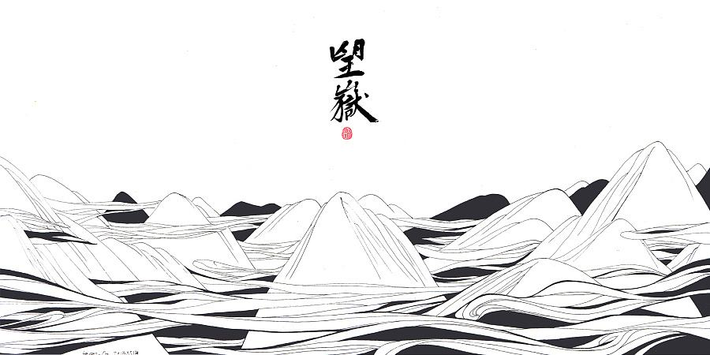

|
|  | 望岳 岱宗夫如何？齐鲁青未了。 造化钟神秀，阴阳割昏晓。 荡胸生曾云，决眦入归鸟。 会当凌绝顶，一览众山小。 |
词句注释 ⑴岱宗：泰山亦名岱山或岱岳，五岳之首，在今山东省泰安市城北。古代以泰山为五岳之首，诸山所宗，故又称“岱宗”。历代帝王凡举行封禅大典，皆在此山，这里指对泰山的尊称。夫：读“fú”。句首发语词，无实在意义，语气词，强调疑问语气。如何：怎么样。 ⑵齐、鲁：古代齐鲁两国以泰山为界，齐国在泰山北，鲁国在泰山南。原是春秋战国时代的两个国名，在今山东境内，后用齐鲁代指山东地区。青未了：指郁郁苍苍的山色无边无际，浩茫浑涵，难以尽言。青：指苍翠、翠绿的美好山色。未了：不尽，不断。 ⑶造化：大自然。钟：聚集。神秀：天地之灵气，神奇秀美。 ⑷阴阳：阴指山的北面，阳指山的南面。这里指泰山的南北。割：分。夸张的说法。此句是说泰山很高，在同一时间，山南山北判若早晨和晚上。昏晓：黄昏和早晨。极言泰山之高，山南山北因之判若清晓与黄昏，明暗迥然不同。 ⑸荡胸：心胸摇荡。曾：同“层”，重叠。 ⑹决眦（zì）：眦：眼角。眼角（几乎）要裂开。这是由于极力张大眼睛远望归鸟入山所致。决：裂开。入：收入眼底，即看到。 ⑺会当：终当，定要。凌：登上。凌绝顶，即登上最高峰。 ⑻小：形容词的意动用法，意思为“以······为小，认为······小”。 |
|
白话译文 东岳泰山，美景如何？走出齐鲁，山色仍然历历在目。 神奇自然，会聚千种美景，山南山北，分出清晨黄昏。 层层白云，荡涤胸中沟壑；翩翩归鸟，飞入赏景眼圈。 定要登上泰山顶峰，俯瞰群山豪情满怀。 |
|

唐诗学习网 Copyright© 2018 All Right Reversed
|